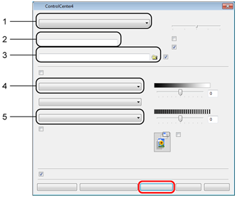

Skanowanie dokumentu do pliku PDF za pomocą programu ControlCenter4
| 0. | Jeśli pojawi się ekran trybu ControlCenter4, wybierz opcję Tryb zaawansowany, a następnie kliknij przycisk OK. |
|---|

| 1. | Kliknij pozycję Plik. |
|---|

| 2. | Naciśnij przycisk Skan. Urządzenie rozpocznie proces skanowania. Automatycznie zostanie otwarty folder, w którym zostały zapisane skanowane dane. |
|---|

- Wybierz pozycję PDF (*.pdf) z listy rozwijanej Rodzaj pliku.
- Umożliwia wprowadzenie nazwy pliku, jaka ma być używana dla dokumentu.
- Umożliwia zapisanie pliku do folderu domyślnego lub wybór innego folderu przez kliknięcie przycisku
 (Przeglądaj).
(Przeglądaj). - Pozwala wybrać rozdzielczość skanowania z listy rozwijanej Rozdzielczość.
- Pozwala wybrać rozmiar dokumentu z listy rozwijanej Wielkość dokumentu.